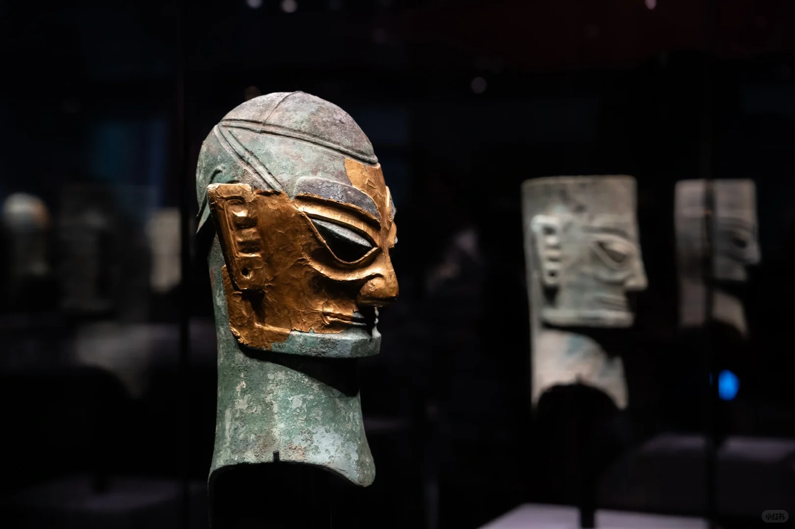
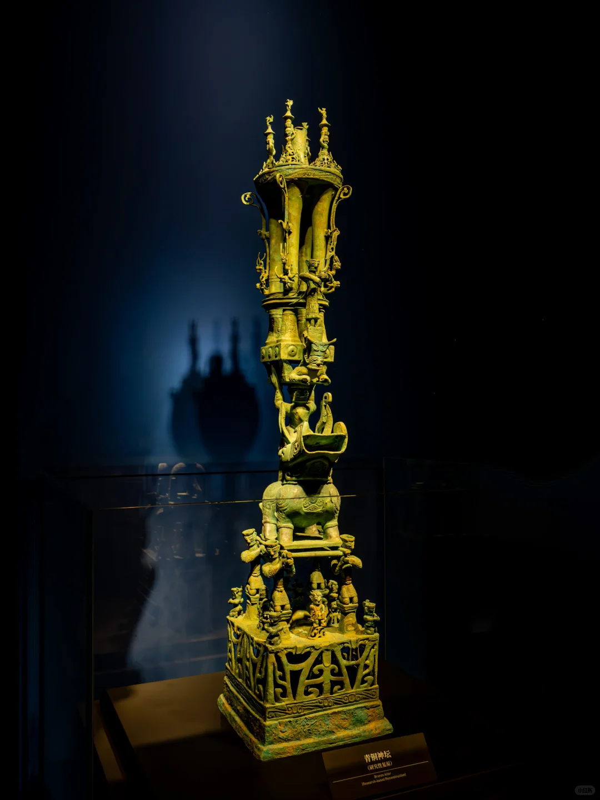
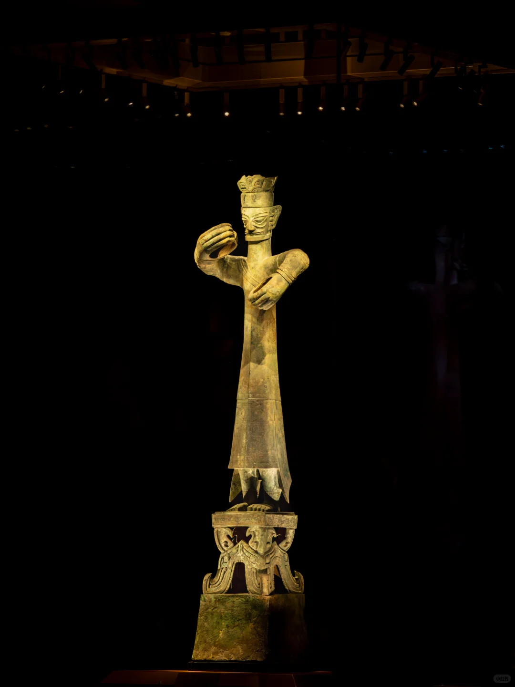
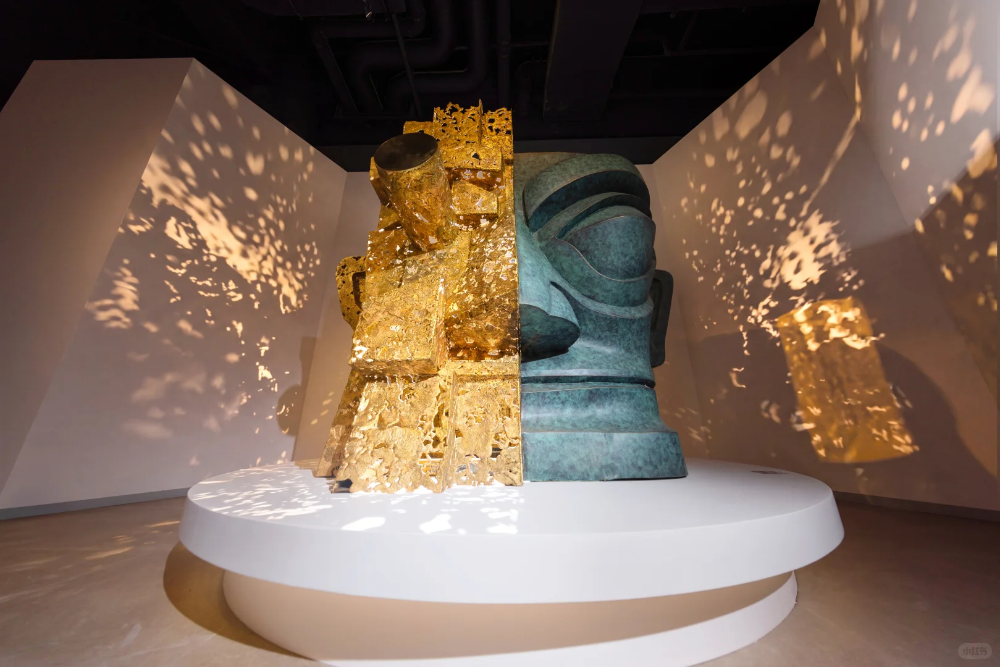

一号青铜神树
通高近四米，树、鸟与龙共同呈现古蜀人关于天地交通的想象。

三星堆遗址位于广汉城西鸭子河畔，遗址年代从新石器时代晚期延续至商周时期，是理解古蜀文明的重要都邑遗址。1929年的玉石器发现开启考古序幕，1986年两个祭祀坑及此后的持续发掘，让青铜器、金器、玉器构成的古蜀世界逐渐清晰。
新馆将百年考古、王都面貌与祭祀信仰组织为连续叙事。第一次到访不要只追逐明星文物：先看遗址如何被发现，再观察人物的发式、手势、服饰以及器物之间的组合关系。
通高近四米，树、鸟与龙共同呈现古蜀人关于天地交通的想象。
华服、环握双手与高台基座，把礼仪、权力和身体姿态联系起来。
金器上的鱼、鸟与人头像纹样，是理解古蜀王权符号的入口。
夸张的眼耳比例与“纵目”传说相互映照，适合与其他面具对看。
先看成组陈列的尺度，再比较树、人、鸟的姿态，最后观察黄金与青铜在展柜中的材质差异。






拍下展签不如先看关系：比较人物的发式、手势与服饰，再观察青铜、黄金和玉器如何在同一礼仪场景中组合。
实名预约、开放时段与临时展览均可能调整，请在出发前查看官网。
四川省德阳市广汉市向新路133号
出发前核验开放状态、票务或活动安排；到达方式与停车请使用实时地图。
打开官方网站馆区餐饮选择与营业时间可能变化；如继续一日路线，可把正餐安排到房湖与老城一带。
查看附近餐饮背景资料整理：2026-09-20。票务与临时开放请查看最新公告。